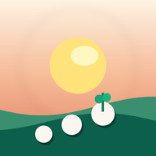

Un compagnon bienveillant, à votre rythme.
Cette appli est un soutien du quotidien : pas un régime, pas un jugement, et pas un avis médical. Elle est gratuite, sans compte et sans publicité. Vos informations restent sur votre appareil.
Merci de cocher la case pour continuer — c’est important.
Juste un prénom, ou le nom que vous préférez lire le matin.
Indiquez un prénom pour personnaliser l’accueil.
Elle sert uniquement à calculer un IMC, que vous pourrez masquer. Rien d’autre n’en est déduit automatiquement.
Indiquez une taille entre 120 et 230 cm.
Un point de départ, pas un verdict. Vous pourrez le noter à nouveau quand vous voudrez, sans obligation quotidienne.
Indiquez un poids entre 30 et 300 kg.
Perdre 5 à 10 % du poids actuel est souvent un premier cap recommandé, déjà bénéfique pour la santé. C’est vous qui choisissez, et vous pourrez l’ajuster plus tard.
Indiquez un objectif cohérent (au moins 30 kg, et typiquement un peu sous votre poids actuel).
Vous pourrez tout modifier plus tard. On y va, sans se presser.

Petit à Petit